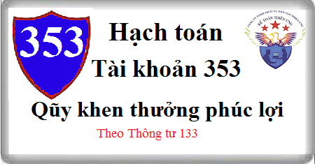

Hướng dẫn cách hạch toán Tài khoản 353 theo thông tư 133, cách hạch toán Quỹ khen thưởng, phúc lợi, hạch toán khi trích quỹ khen thưởng, trả tiền thưởng bằng quỹ khen thưởng, mua TSCĐ bằng quỹ khen thưởng, phúc lợi.
1. Nguyên tắc kế toán Tài khoản 353 - Quỹ khen thưởng, phúc lợi
a) Tài khoản này dùng để phản ánh số hiện có, tình hình tăng, giảm quỹ khen thưởng, quỹ phúc lợi và quỹ thưởng ban quản lý điều hành công ty của doanh nghiệp. Quỹ khen thưởng, quỹ phúc lợi được trích từ lợi nhuận sau thuế TNDN của doanh nghiệp để dùng cho công tác khen thưởng, khuyến khích lợi ích vật chất, phục vụ nhu cầu phúc lợi công cộng, cải thiện và nâng cao đời sống vật chất, tinh thần của người lao động.
b) Việc trích lập và sử dụng quỹ khen thưởng, quỹ phúc lợi và quỹ thưởng ban quản lý điều hành công ty phải theo chính sách tài chính hiện hành hoặc theo quyết định của chủ sở hữu.
c) Quỹ khen thưởng, quỹ phúc lợi, quỹ thưởng ban quản lý điều hành công ty phải được hạch toán chi tiết theo từng loại quỹ.
d) Đối với TSCĐ đầu tư, mua sắm bằng quỹ phúc lợi khi hoàn thành dùng vào sản xuất, kinh doanh, kế toán ghi tăng TSCĐ đồng thời ghi tăng Vốn đầu tư của chủ sở hữu và giảm quỹ phúc lợi.
đ) Đối với TSCĐ đầu tư, mua sắm bằng quỹ phúc lợi khi hoàn thành dùng cho nhu cầu văn hóa, phúc lợi của doanh nghiệp, kế toán ghi tăng TSCĐ và đồng thời kết chuyển từ Quỹ phúc lợi (TK 3532) sang Quỹ phúc lợi đã hình thành TSCĐ (TK 3533). Những TSCĐ này hàng tháng không trích khấu hao TSCĐ vào chi phí mà cuối niên độ kế toán tính hao mòn TSCĐ một lần/một năm để ghi giảm Quỹ phúc lợi đã hình thành TSCĐ.
2. Kết cấu và nội dung Tài khoản 353 - Quỹ khen thưởng, phúc lợi
Bên Nợ:
- Các khoản chi tiêu quỹ khen thưởng, quỹ phúc lợi, quỹ thưởng ban quản lý điều hành công ty;
- Giảm quỹ phúc lợi đã hình thành TSCĐ khi tính hao mòn TSCĐ hoặc do nhượng bán, thanh lý, phát hiện thiếu khi kiểm kê TSCĐ;
- Đầu tư, mua sắm TSCĐ bằng quỹ phúc lợi khi hoàn thành phục vụ nhu cầu văn hóa, phúc lợi;
- Cấp quỹ khen thưởng, phúc lợi cho cấp dưới.
Bên Có
- Trích lập quỹ khen thưởng, quỹ phúc lợi, quỹ thưởng ban quản lý điều hành công ty từ lợi nhuận sau thuế TNDN;
- Quỹ khen thưởng, phúc lợi được cấp trên cấp;
- Quỹ phúc lợi đã hình thành TSCĐ tăng do đầu tư, mua sắm TSCĐ bằng quỹ phúc lợi hoàn thành đưa vào sử dụng cho sản xuất, kinh doanh hoặc hoạt động văn hóa, phúc lợi.
Số dư bên Có: Số quỹ khen thưởng, quỹ phúc lợi hiện còn của doanh nghiệp.
Tài khoản 353 - Quỹ khen thưởng, phúc lợi, có 4 tài khoản cấp 2:
- Tài khoản 3531 - Quỹ khen thưởng: Phản ánh số hiện có, tình hình trích lập và chi tiêu quỹ khen thưởng của doanh nghiệp.
- Tài khoản 3532 - Quỹ phúc lợi: Phản ánh số hiện có, tình hình trích lập và chi tiêu quỹ phúc lợi của doanh nghiệp.
- Tài khoản 3533 - Quỹ phúc lợi đã hình thành TSCĐ: Phản ánh số hiện có, tình hình tăng, giảm quỹ phúc lợi đã hình thành TSCĐ của doanh nghiệp.
- Tài khoản 3534 - Quỹ thưởng ban quản lý điều hành công ty: Phản ánh số hiện có, tình hình trích lập và chi tiêu Quỹ thưởng ban quản lý điều hành công ty.
3. Cách hạch toán Qũy khen thưởng phúc lợi Tài khoản 353:
a) Trong năm khi tạm trích quỹ khen thưởng, phúc lợi, ghi:
Nợ TK 421- Lợi nhuận sau thuế chưa phân phối
Có TK 353 - Quỹ khen thưởng, phúc lợi (3531, 3532, 3534).
b) Cuối năm, xác định quỹ khen thưởng, phúc lợi được trích thêm, ghi:
Nợ TK 421 - Lợi nhuận sau thuế chưa phân phối
Có TK 353 - Quỹ khen thưởng, phúc lợi (3531, 3532, 3534).
c) Tính tiền thưởng phải trả cho công nhân viên và người lao động khác trong doanh nghiệp, ghi:
Nợ TK 353 - Quỹ khen thưởng, phúc lợi (3531).
Có TK 334 Phải trả người lao động.
d) Dùng quỹ phúc lợi để chi trợ cấp khó khăn, chi cho công nhân viên và người lao động nghỉ mát, chi cho phong trào văn hóa, văn nghệ quần chúng, ghi:
Nợ TK 353 - Quỹ khen thưởng, phúc lợi (3532)
Có các Tài khoản 111, 112.
đ) Khi bán sản phẩm, hàng hóa trang trải bằng quỹ khen thưởng phúc lợi, kế toán phản ánh doanh thu không bao gồm thuế GTGT phải nộp, ghi:
Nợ TK 353 - Quỹ khen thưởng, phúc lợi (tổng giá thanh toán)
Có TK 511 - Doanh thu bán hàng và cung cấp dịch vụ
Có TK 3331 Thuế GTGT phải nộp (33311).
e) Khi cấp trên cấp quỹ khen thưởng, phúc lợi cho đơn vị cấp dưới, ghi:
Nợ TK 353 - Quỹ khen thưởng, phúc lợi (3531, 3532, 3534)
Có các TK 111, 112.
g) Số quỹ khen thưởng, phúc lợi do đơn vị cấp trên cấp xuống, ghi:
Nợ các TK 111, 112,...
Có TK 353 - Quỹ khen thưởng, phúc lợi (3531, 3532).
h) Dùng quỹ phúc lợi ủng hộ các vùng thiên tai, hỏa hoạn, chi từ thiện… ghi:
Nợ TK 353 - Quỹ khen thưởng, phúc lợi (3532)
Có các TK 111, 112.
i) Khi đầu tư, mua sắm TSCĐ hoàn thành bằng quỹ phúc lợi đưa vào sử dụng cho mục đích văn hoá, phúc lợi của doanh nghiệp, ghi:
Nợ TK 2111 TSCĐ hữu hình (nguyên giá)
Nợ TK 133 - Thuế GTGT được khấu trừ (nếu được khấu trừ)
Có các TK 111, 112, 241, 331,…
Nếu thuế GTGT đầu vào không được khấu trừ thì nguyên giá TSCĐ bao gồm cả thuế GTGT
Đồng thời, ghi:
Nợ TK 3532 - Quỹ phúc lợi
Có TK 3533 - Quỹ phúc lợi đã hình thành TSCĐ.
k) Định kỳ, tính hao mòn TSCĐ đầu tư, mua sắm bằng quỹ phúc lợi, sử dụng cho nhu cầu văn hóa, phúc lợi của doanh nghiệp, ghi:
Nợ TK 3533 - Quỹ phúc lợi đã hình thành TSCĐ
Có TK 214 Hao mòn TSCĐ.
l) Khi nhượng bán, thanh lý TSCĐ đầu tư, mua sắm bằng quỹ phúc lợi, dùng vào hoạt động văn hoá, phúc lợi:
- Ghi giảm TSCĐ nhượng bán, thanh lý:
Nợ TK 3533 - Quỹ phúc lợi đã hình thành TSCĐ (giá trị còn lại)
Nợ TK 214 - Hao mòn TSCĐ (giá trị hao mòn)
Có TK 2111 - TSCĐ hữu hình (nguyên giá).
- Phản ánh các khoản thu, chi nhượng bán, thanh lý TSCĐ:
+ Đối với các khoản chi, ghi:
Nợ TK 353 - Quỹ khen thưởng, phúc lợi (3532)
Nợ TK 133 - Thuế GTGT được khấu trừ (nếu được khấu trừ)
Có các TK 111, 112, 334,…
+ Đối với các khoản thu, ghi:
Nợ các TK 111, 112
Có TK 353 - Quỹ khen thưởng, phúc lợi (3532)
Có TK 3331 - Thuế GTGT phải nộp (nếu có).
n) Trường hợp chủ sở hữu doanh nghiệp quyết định thưởng cho Hội đồng quản trị, Ban giám đốc từ Quỹ thưởng ban quản lý, điều hành công ty, ghi:
Nợ TK 353 - Quỹ khen thưởng, phúc lợi (3354)
Có các TK 111, 112...
o) Trường hợp công ty cổ phần được phát hành cổ phiếu thưởng từ quỹ khen thưởng để tăng vốn đầu tư của chủ sở hữu, ghi:
Nợ TK 3531 - Quỹ khen thưởng
Nợ TK 4112 - Thặng dư vốn cổ phần (giá bán thấp hơn mệnh giá)
Có TK 4111 - Vốn góp của chủ sở hữu
Có TK 4112 - Thặng dư vốn cổ phần (giá bán cao hơn mệnh giá).
-------------------------
Kế toán Diệu Tâm xin chúc bạn làm tốt công việc kế toán
Kế toán Diệu Tâm xin chúc bạn làm tốt công việc kế toán
